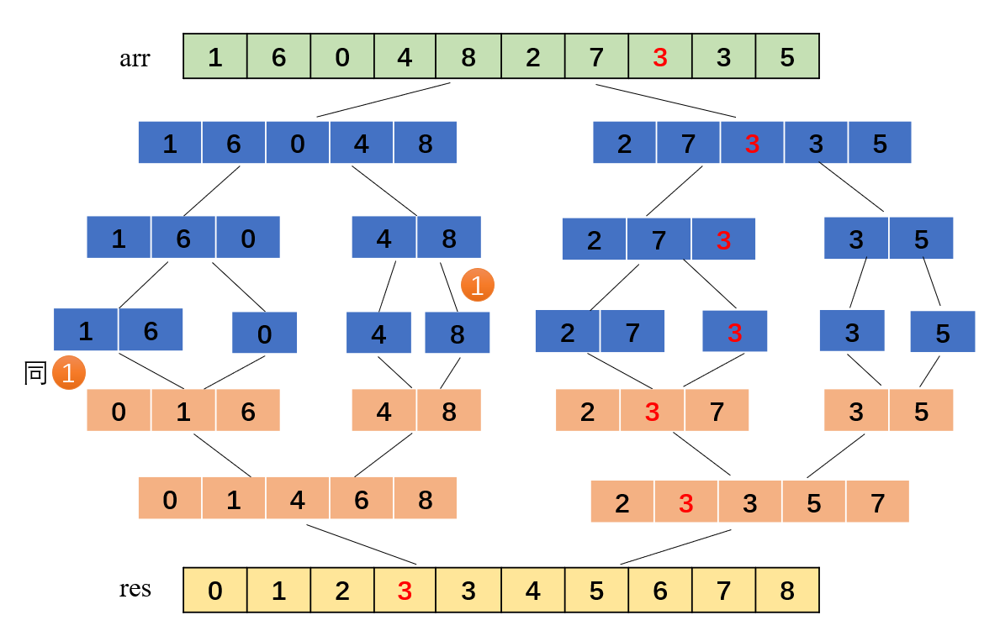

归并排序
归并排序采取分而治之的思想，将待排序的数据分成两组数据排好序，再把两个排好序的子数组给合并起来，此过程是递归的，当两个子序列都分别只有一个元素时向上合并，只有一个元素的时候即为有序的，排序过程如下图所示：

递归代码如下所示：
1
2
3
4
5
6
7
8
9
10
11
12
13
14
15
16
17
18
19
20
21
22
23
24
25
26
27
28
29
30
31
32
33
34
35
36
using namespace std;
void merge(vector<int>&arr, vector<int>tmp, int left, int mid, int right){
int i = left, j = mid + 1, k = left;
while(i <= mid && j <= right){
//这样写是稳定的
if(arr[i] <= arr[j])
tmp[k++] = arr[i++];
else
tmp[k++] = arr[j++];
}
while(i <= mid)
tmp[k++] = arr[i++];
while(j <= right)
tmp[k++] = arr[j++];
for(int i = left; i <= right; i++)
arr[i] = tmp[i];
}
void mergeSort(vector<int>&arr, vector<int>tmp, int left, int right){
if(left < right){
int mid = (right + left) / 2;
mergeSort(arr, tmp, left, mid);
mergeSort(arr, tmp, mid + 1, right);
merge(arr, tmp, left, mid, right);
}
}
int main(){
vector<int>arr = {1, 5, 3, 3, 8, 2, 7, 6, 4, 0};
vector<int>tmp(arr.size(), 0);
mergeSort(arr, tmp, 0, arr.size() - 1);
for(auto it : arr)
cout<<it<<" ";
cout<<endl;
}归并排序按照上面的比较方法是稳定的，从上面的图中可以看出两个3之间的相对位置没有变换，空间复杂度为O(n),希尔排序的平均时间复杂度为O(nlogn),最坏时间复杂度为O(nlogn),最好时间复杂度为O(nlogn).
Toggle site
Catalog
You've read0%